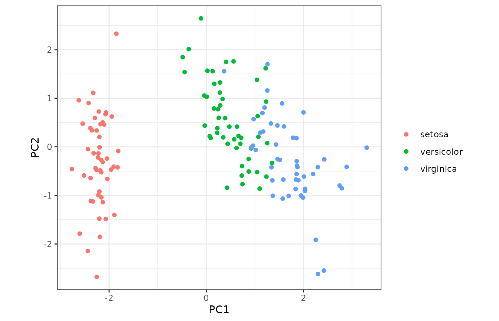

Using matsindf for principal components analysis
Alexander Davis
2023-12-21
Source:vignettes/iris_pca.Rmd
iris_pca.RmdIntroduction
When working with tidy data, it can be challenging to use R
operations that take in matrices. But the functions in
matsindf make it easier.
Data
We will illustrate how to handle these cases with
matsindf functions by doing principal components analysis
(PCA) on the classic Fisher iris dataset, often used to illustrate PCA.
We will be using a “long” input table, in which each measurement, rather
than each flower, is a single row.
long_iris <- datasets::iris %>%
dplyr::mutate(flower = sprintf("flower_%d", 1:nrow(datasets::iris))) %>%
tidyr::pivot_longer(
cols = c(-Species, -flower), names_to = "dimension", values_to = "length"
) %>%
dplyr::rename(species = Species) %>%
dplyr::select(flower, species, dimension, length) %>%
dplyr::mutate(species = as.character(species))
head(long_iris, n = 5)
#> # A tibble: 5 × 4
#> flower species dimension length
#> <chr> <chr> <chr> <dbl>
#> 1 flower_1 setosa Sepal.Length 5.1
#> 2 flower_1 setosa Sepal.Width 3.5
#> 3 flower_1 setosa Petal.Length 1.4
#> 4 flower_1 setosa Petal.Width 0.2
#> 5 flower_2 setosa Sepal.Length 4.9Generate PCA results
Using matsindf, we can convert to a matrix, apply PCA,
and then convert back to a long format table.
long_pca_embeddings <- long_iris %>%
collapse_to_matrices(
rownames = "flower", colnames = "dimension", matvals = "length"
) %>%
dplyr::transmute(projection = lapply(length, function(mat)
stats::prcomp(mat, center = TRUE, scale = TRUE)$x
)) %>%
expand_to_tidy(
rownames = "flower", colnames = "component", matvals = "projection"
)
head(long_pca_embeddings, n = 5)
#> flower component projection
#> 1 flower_1 PC1 -2.2571412
#> 2 flower_10 PC1 -2.1770349
#> 3 flower_100 PC1 0.2558734
#> 4 flower_101 PC1 1.8384100
#> 5 flower_102 PC1 1.1540156The result are the coordinates of the iris data along the principal components, as a long format table. We just need to add back the species column …
long_pca_withspecies <- long_iris %>%
dplyr::select(flower, species) %>%
dplyr::distinct() %>%
dplyr::left_join(long_pca_embeddings, by = "flower")
head(long_pca_withspecies, n = 5)
#> # A tibble: 5 × 4
#> flower species component projection
#> <chr> <chr> <chr> <dbl>
#> 1 flower_1 setosa PC1 -2.26
#> 2 flower_1 setosa PC2 -0.478
#> 3 flower_1 setosa PC3 0.127
#> 4 flower_1 setosa PC4 -0.0241
#> 5 flower_2 setosa PC1 -2.07… followed by the familiar PCA plot.
long_pca_withspecies %>%
tidyr::pivot_wider(
id_cols = c(flower, species), names_from = component,
values_from = projection
) %>%
ggplot2::ggplot(ggplot2::aes(x = PC1, y = PC2, colour = species)) +
ggplot2::geom_point() +
ggplot2::labs(colour = ggplot2::element_blank()) +
ggplot2::theme_bw() +
ggplot2::coord_equal()
As expected, we see that the distribution of measurements differs across the three species of iris.